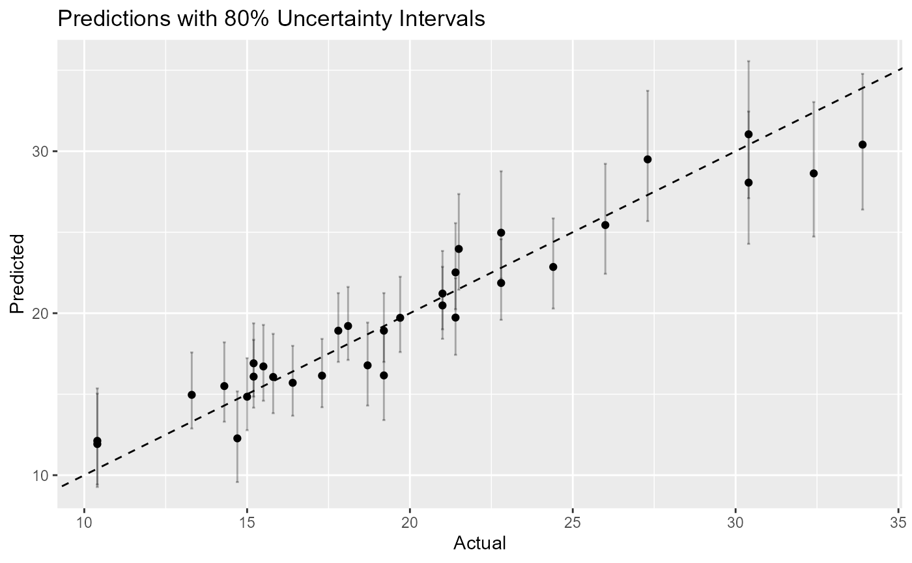

Introduction
The rtabpfn package provides an enhanced R interface to
TabPFN, a foundation model for tabular data. This vignette demonstrates
the key features, focusing on quantile predictions and uncertainty
estimation.
Setup
First, ensure the Python environment is configured:
## Using virtual environment "tabpfn" ...## Using virtual environment "tabpfn" ...## PyTorch CUDA Available: TRUE
## CUDA Version: 12.8
## Device Count: 1
## Device: NVIDIA GeForce RTX 5070 Laptop GPURegression with Quantiles
# Load data
data(mtcars)
X <- mtcars[, c("cyl", "disp", "hp", "wt")]
y <- mtcars$mpg
# Train model
model <- tab_pfn_regression(X, y)
# Get quantile predictions
preds <- predict(model, X,
type = "quantiles",
quantiles = c(0.1, 0.5, 0.9))
head(preds)## # A tibble: 6 × 3
## .pred_q010 .pred_q050 .pred_q090
## <dbl> <dbl> <dbl>
## 1 19.0 21.2 23.8
## 2 18.4 20.5 22.9
## 3 22.1 25.0 28.8
## 4 17.4 19.7 22.2
## 5 14.3 16.8 19.4
## 6 17.1 19.2 21.6Visualizing Uncertainty
library(ggplot2)
# Combine predictions with actual values
df <- data.frame(
actual = y,
median = preds$.pred_q050,
lower = preds$.pred_q010,
upper = preds$.pred_q090
)
# Plot
ggplot(df, aes(x = actual, y = median)) +
geom_abline(intercept = 0, slope = 1, linetype = "dashed") +
geom_errorbar(aes(ymin = lower, ymax = upper), alpha = 0.3) +
geom_point() +
labs(title = "Predictions with 80% Uncertainty Intervals",
x = "Actual", y = "Predicted") ```